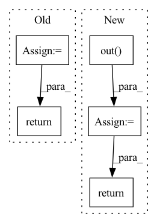

Pattern ID :27484
Before Change
x = self.up_sample_2(x)
x = self.conv_1(x)
outputs_reshaped = x[:, :, : -1, :]
print(outputs_reshaped.shape)
return outputs_reshaped
class Discriminator(nn.Module):
def __init__(self, num_speakers=4):After Change
x = self.up_sample_1(x)
x = self.up_sample_2(x)
out = self.out( x)
return out
class Discriminator(nn.Module):
def __init__(self, num_speakers=4):In pattern: SUPERPATTERN
Frequency: 4
Non-data size: 5
Instances Fragment ID: 81588654
Project Name: oscarshu0719/pytorch-stargan-vc2
Commit Name: 3af590c49514eccd6ca436f239c67118add8a86d
Time: 2020-05-15
Author: vm3y3rmp40719@gmail.com
File Name: model.py
M Class Name: Generator
N Class Name: Generator
M Method Name: forward(3)
N Method Name: forward(4)
M Parent Class: nn.Module
N Parent Class: nn.Module
M File Name: model.py
N File Name: model.py
M Start Line: 248
M End Line: 280
N Start Line: 266
N End Line: 269
Before Change
x = self.conv1(x)
x = self.conv2(x)
x = self.conv3(x)
x = self.conv4(x)
temp = x.view(x.shape[0], -1)
output = self.output(temp)
return output, x
def train():After Change
x = x.view(x.shape[0], -1)
x = self.relu(self.fc1(x))
x = self.relu(self.fc2(x))
x = self.out( x)
return x
def train(): Fragment ID: 81588651
Project Name: ki-ljl/cnn-dogs-vs-cats
Commit Name: 8377a6a38f25ba56195c2396838201aa05b2f5cd
Time: 2022-03-26
Author: lijunliang.ki@gmail.com
File Name: CNN.py
M Class Name: cnn
N Class Name: cnn
M Method Name: forward(2)
N Method Name: forward(2)
M Parent Class: nn.Module
N Parent Class: nn.Module
M File Name: CNN.py
N File Name: CNN.py
M Start Line: 71
M End Line: 75
N Start Line: 81
N End Line: 85
Before Change
def __call__(self, x):
x2 = self.seq(x)
z = self.drop(self.out(self.drop(nn.gelu(x2))))
return self.norm(z + x)
// We can then stack a bunch of these blocks on top of each otherAfter Change
x = self.seq(x)
x = self.drop(nn.gelu(x))
if self.glu:
x = self.out(x) * jax.nn.sigmoid(self.out2(x))
else:
x = self.out( x)
x = skip + self.drop(x)
if not self.prenorm: x = self.norm(x)
return x
// We can then stack a bunch of these blocks on top of each other Fragment ID: 81588640
Project Name: srush/annotated-s4
Commit Name: 81c8eb2d2fbf9a6896f80adbf11d290e0f177b4e
Time: 2022-06-05
Author: albertfgu@gmail.com
File Name: s4/s4.py
M Class Name: SequenceBlock
N Class Name: SequenceBlock
M Method Name: __call__(2)
N Method Name: __call__(2)
M Parent Class: nn.Module
N Parent Class: nn.Module
M File Name: s4/s4.py
N File Name: s4/s4.py
M Start Line: 642
M End Line: 644
N Start Line: 646
N End Line: 656
Before Change
// Collect valid
// valid_0 = (pers1 != 0).all(-1)
return x + self.bn(x0), x_dim1
class FakeSetTopoLayer(nn.Module):After Change
// Collect valid
// valid_0 = (pers1 != 0).all(-1)
if self.residual_and_bn:
x0 = x + self.bn(x0)
else:
x0 = self.out( torch.cat([x, x0], dim=-1))
return x0, x1
Fragment ID: 81588657
Project Name: borgwardtlab/togl
Commit Name: f6de25e187c5a78974edd07cec7fc20c675bbbc6
Time: 2021-02-02
Author: max.horn@bsse.ethz.ch
File Name: topognn/layers.py
M Class Name: SimpleSetTopoLayer
N Class Name: SimpleSetTopoLayer
M Method Name: forward(3)
N Method Name: forward(3)
M Parent Class: nn.Module
N Parent Class: nn.Module
M File Name: topognn/layers.py
N File Name: topognn/layers.py
M Start Line: 222
M End Line: 261
N Start Line: 238
N End Line: 270